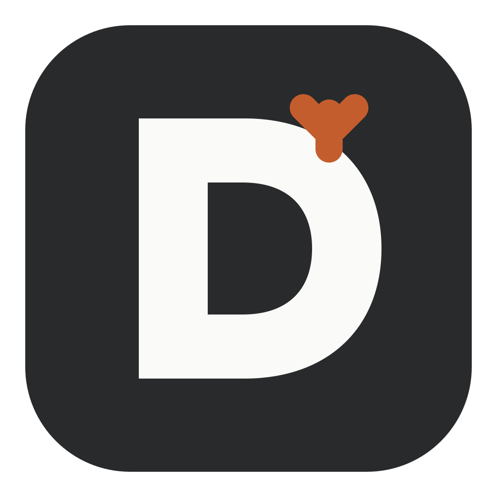
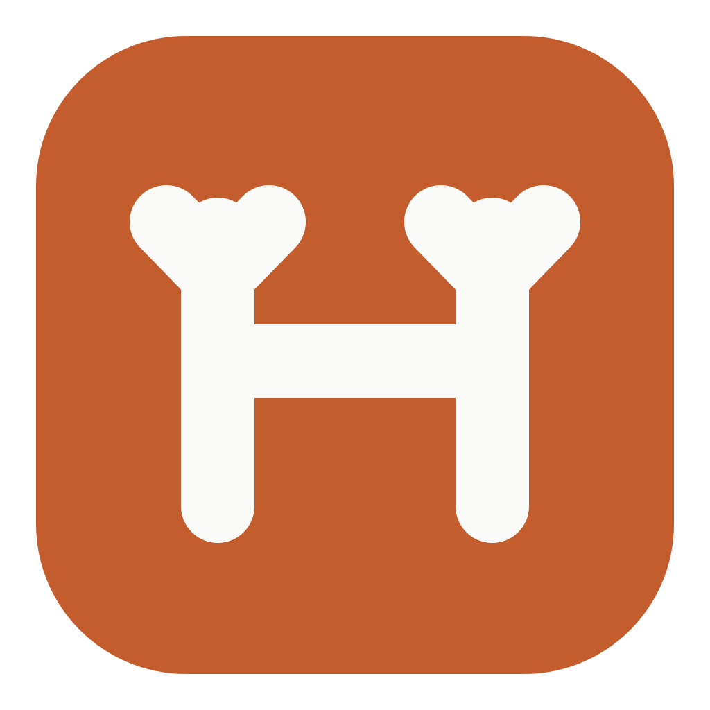
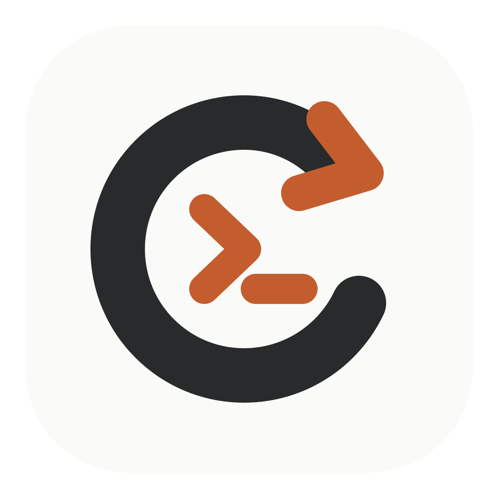

01 · 分支 D
品牌延续最佳
字母 D 建立名称识别，右上分支同时指向鹿角、Git 分支与 Agent 决策路径。形体最克制，也最容易扩展为单色标。
以石墨、暖白和陶橙为统一品牌资产。四个方向均使用大色块与单一轮廓，优先保证 Dock、标题栏和 32px 小尺寸下的辨识度。

字母 D 建立名称识别，右上分支同时指向鹿角、Git 分支与 Agent 决策路径。形体最克制，也最容易扩展为单色标。

将 H 的两根竖画直接处理为鹿角，保留 DeerHux 的动物记忆点。陶橙成为大面积识别色，适合在应用列表中快速定位。

两侧代码括号也构成抽象鹿角，中间只保留一个鹿面切片。保留产品领域，但相较具象鹿头更几何、更适合界面系统。

闭环箭头表达持续运行的 Agent Loop，内部终端提示符明确编码场景。语义清楚，但鹿的品牌资产会退居到名称层。